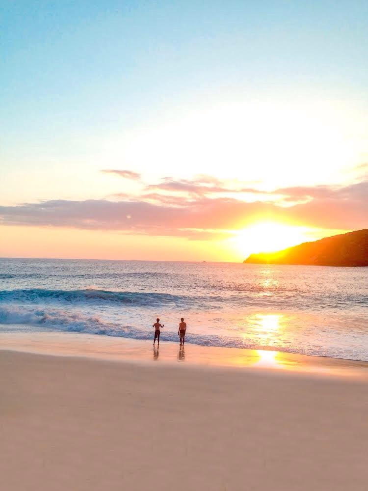

Gallery
Kelingking Beach 
Nusa Penida.Kelingking Beach
On the island of Nusa Penida, you can hire a moped and make the journey to Kelingking, which is about 30 minutes from the harbor.A restaurant is perched atop the mountain with some pretty extreme views. Nusa Penida has so many amazing views making it hard to pick a favorite. But when the cliffs form in the shape of a Tyrannosaurus Rex at Kelingking Secret Point Beach it is bound to be a crowd favorite Kelingking actually translates into English meaning Pinkie a term referencing the smallest finger on the hand.
DISCOVER
Discover Indonesia
The Republic of Indonesia is the largest archipelago the world comprising 13,466 large and small tropical islands fringed with white sandy beaches, many still uninhabited and a number even still unnamed.Discover Indonesia by ETSDC – NGO is Non Government Organization since 1996,is a valuable national and International resource for tourism profession and industries, travel writer, scientist, university.
Recent Posts
Perjalan Muhibah Perwujudan Gedung Sate Sebagai Museum
Eksplorasi Click Square Bandung Bersama Instameet Indonesia
Instameet Agoda Basecamp di Dusun Bambu
Mereka Yang Tetap Mengenang AKPARBA
Click Square Membangun Wahana Bandung Kota Kreative
Archives
June 2017
July 2017
August 2017
September 2017
Oktober 2017
November 2017